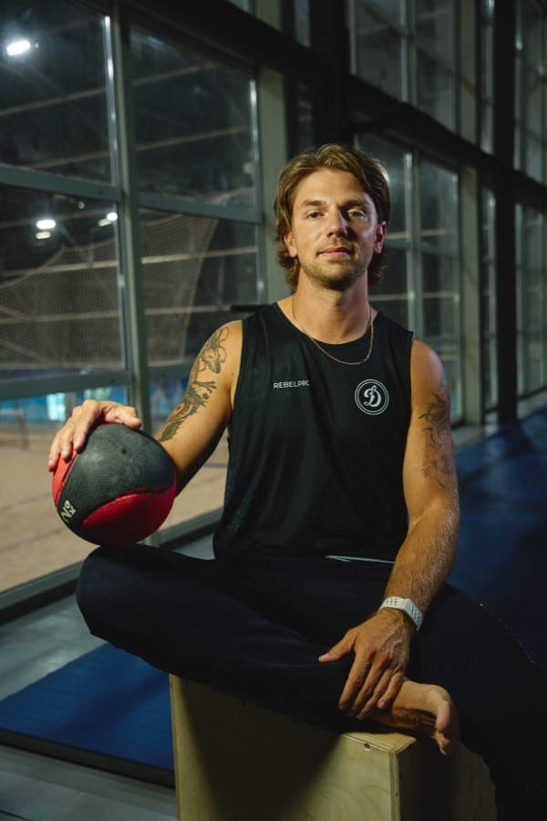
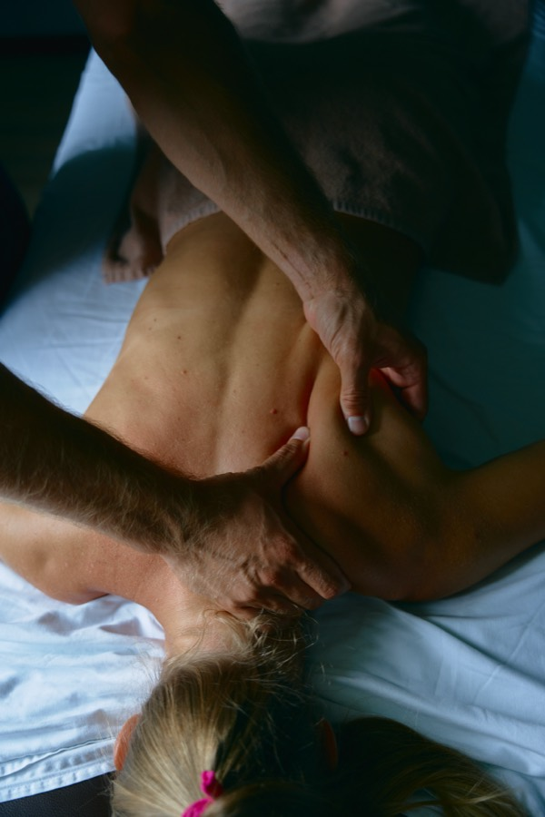
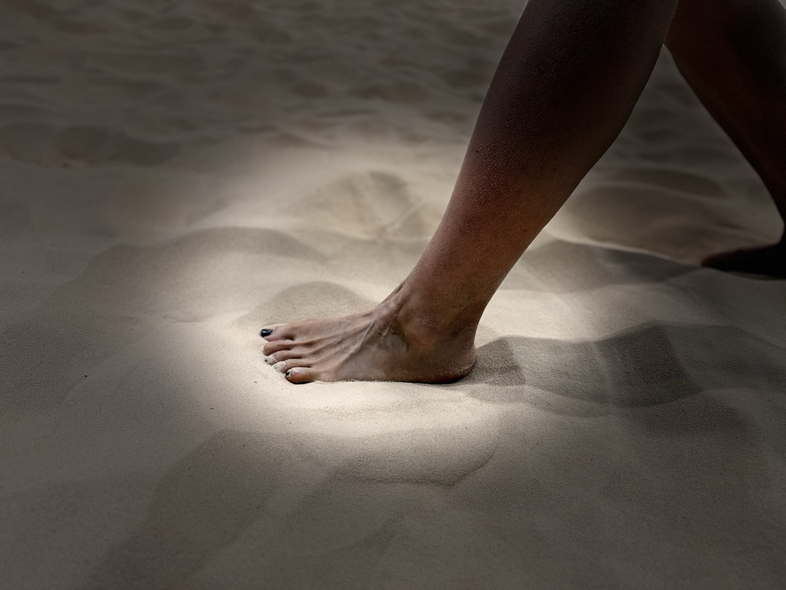

Во время игры ты не становишься лучше.
Ты тратишь то, что уже есть.
Лучше ты становишься между играми. Если между играми ничего не происходит — ты не растёшь, а изнашиваешься.
Это не про то, что вы плохо играете. Это про то, что тело не выдаёт то, что от него просят — и можно точно найти, в каком именно месте.

Дипломированный тренер по ОФП и СФП, массажист, специалист по восстановлению и реабилитации. В профессии около 3 лет, постоянно учусь — семинары, курсы, разбор методик.
Сам 10 лет играю в пляжный волейбол, до этого — конькобежный спорт, академическая гребля, баскетбол, кроссфит, тайский бокс. Работаю с профессиональными спортсменами, любителями и людьми, далёкими от спорта, — включая детей.
Тренер по ОФП, массажист, реабилитолог — обычно три разных специалиста, которые друг друга не знают и тянут в разные стороны. Я вижу всю картину сразу: как вы двигаетесь, что болит и почему, и как одно связано с другим. Не отправляю по кругу — решаю то, что нашлось, сам.


Другой толчок, другой первый шаг, другая нагрузка на стопу и ахилл. Обычные советы на пляже не работают — а я 10 лет играю в пляжный волейбол сам и знаю, почему.
Не обещаю убрать боль за один сеанс. Скажу честно, сколько времени займёт именно ваш случай.
Если случай не мой — отправлю к врачу, а не буду тянуть время.
Дипломированный тренер по ОФП и СФП, массажист. Мануальная терапия, метод сухих игл, миофасциальный релиз, кинезиотейпирование, реабилитация.
Работаю с профессиональными спортсменами, любителями и людьми далёкими от спорта — конькобежный спорт, гребля, баскетбол, кроссфит, тайский бокс, 10 лет пляжный волейбол — сам через многое прошёл.